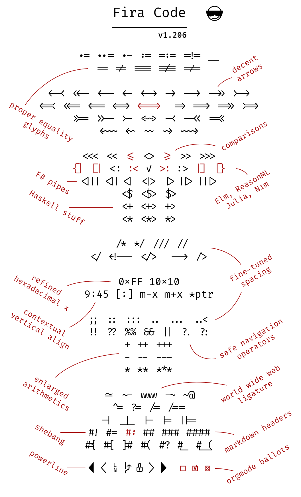
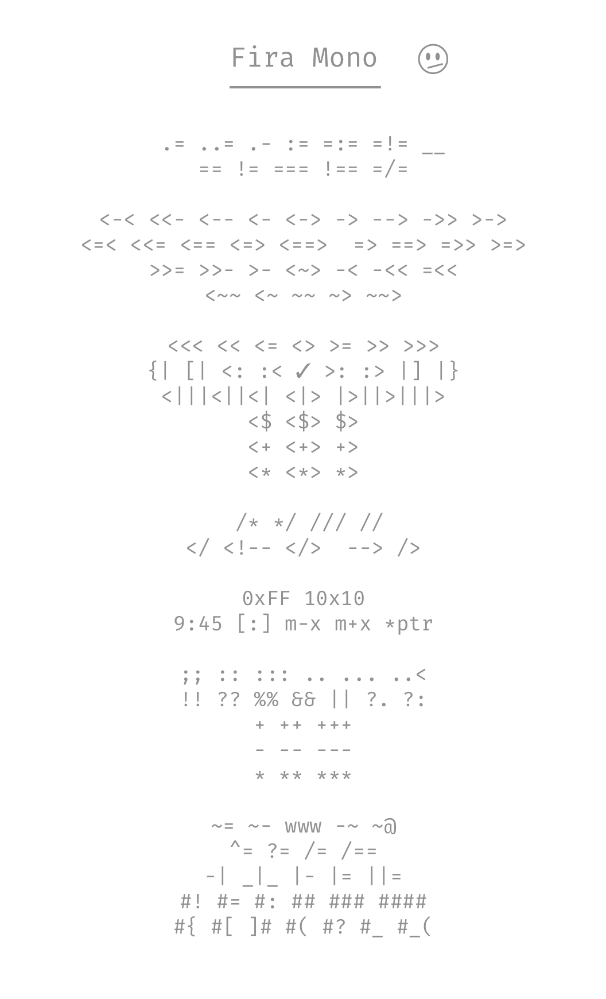
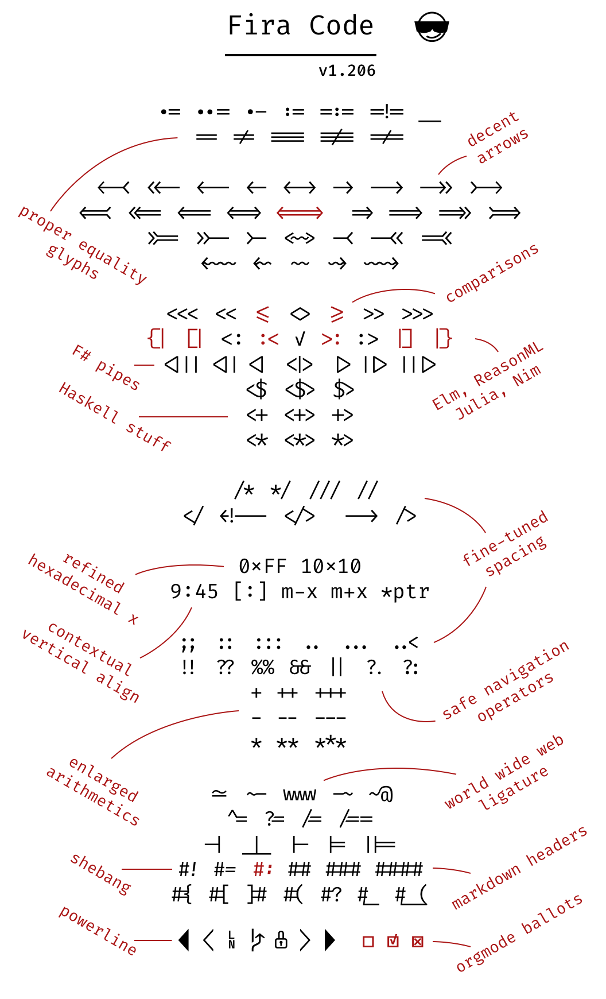
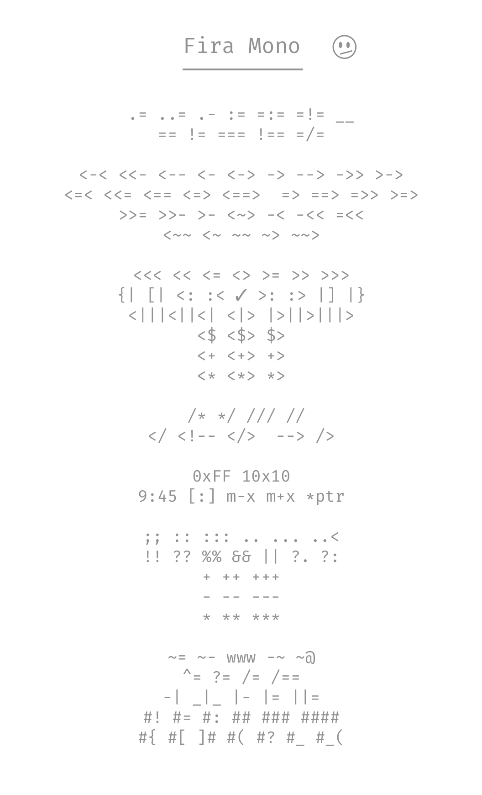

Monospaced font with programming ligatures
Problem
Programmers use a lot of symbols, often encoded with several characters. For the human brain, sequences like ->, <= or := are single logical tokens, even if they take two or three characters on the screen. Your eye spends a non-zero amount of energy to scan, parse and join multiple characters into a single logical one.
Solution
Fira Code is an extension of the Fira Mono font containing a set of ligatures for common programming multi-character combinations. This is just a font rendering feature: underlying code remains ASCII-compatible.
This helps to read and understand code faster. For some frequent sequences like .. or //, ligatures allow us to correct spacing.
 



There are several methods to install the font. The most common is:
- • Download the file
- • Decompress the zip
- • Select all fonts and install them
For more information about how to configure it on your favourite code editor or IDE, check this page.
This is a opensource project by tonsky. You cand find all the documentation of the font on the original repository. You can also see the following video setup
Ruby
class Car < ActiveRecord :: Base has_many :wheels, :class_name => 'Wheel', :foreign_key => 'car_id' scope :available, -> { where(available: true) } end omega = -> { 'www' } alpha = -> (arg) { arg*2 } hash = { 1 => 'one', 2 => 'two' }
JavaScript
function $initHighlight(block, flags) { if (!!flags) { try { if (block.className.search(/\bno\-highlight\b/) != -1) return processBlock(block.__proto__.function, true, 0x0F); } catch (e) { /* handle exception */ } }
PHP
class Car extends BaseCar { protected $options; public function_construct($options) { $this->options = ['base' => $options]; } } for ($i = 10; i <= 12; $i++) { $options[$i] .= $i % 3 === 5; }
Erlang
if L != [] -> % If L is not empty sum(L) / count(L); true -> error end. qsort1([]) -> []; qsort1([H | T]) -> qsort1([ X || X <- T, X < H ]) ++ [H] ++ qsort1([ X || X <- T, X >= H ]).
Elixir
@spec ask(binary) :: list def ask(question \\ "Six times nine == ?") do with 42 <- DeepThought.compute(question) do 10..1 |> Enum.map(fn(x) -> x * 2 end) |> Enum.filter(fn(x) -> (x <= 5) && (x != 42) end) else answer -> <<0x34, 0x32>> === "4" <> "2" %{"#{question}" => answer} [4 ,2] ++ [4, 2] -- [4, 2] end end
Go
func main() { ch := make(chan int) ch <- 1.0e10 // magic number x, ok := <- ch ok = truedefer fmt.Println(`existing now`) go println(len("hello world")) return }
Livescript
take = ( n, [x, ...xs]:list) --> | n <= 0 => [] | empty list => [] | otherwise => [x] ++ take n - 1, xs last-three = reverse >> take 3 >> reverse
Clojure
(defmacro defkey [key & body] `(def (.-name key) ~@body)) (defkey ::args ( -->> (range) #_(filterv even?) ;; FIXME (take-while #(<= % 0xFF)) (remove #{1 2 3 4 5}) (into [])))
Swift
let closure: (Int?) -> String = { return "Number: \($0 ?? 0" } for i in 1..< 100 { guard i != 2 else { continue } if i == 42 { print(closure(i * 10)) } else if i >= 50 || i <= 75 { print(closure(i)) } else if i >= 50 && i <= 75 { print(closure(i)) } }